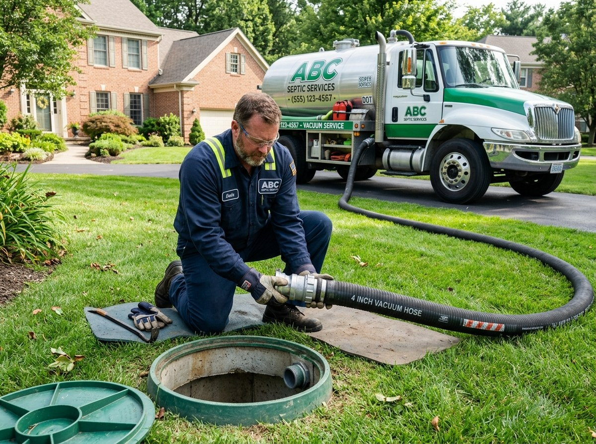

Before the truck arrives
Mark the riser if known, check gate clearance, keep vehicles away from access and bring any old service reports.
A good pumping visit removes accumulated sludge and scum without damaging the tank or turning your lawn into an excavation site. The crew first checks access, then uses vacuum extraction and documents relevant observations.
Scheduled pumping reduces the risk of solids migrating to the drain field. It does not repair broken baffles, cracked pipes or failed soil absorption; those need separate diagnosis.

Years since the last pump matter, but symptoms can be a sign of something else entirely.
No improvised entry or unplanned excavation. Each step exists to protect occupants and keep the site clean.
Clear a path to the tank, move loose garden items and keep children and pets out of the work area.
Mark the riser if known, check gate clearance, keep vehicles away from access and bring any old service reports.
Wait for secure lid closure, save the service record and follow any ventilation or plumbing guidance given onsite.
Illustrative planning estimates only. Access difficulty, haul distance and site conditions affect the final quote.
Clear answers help avoid wrong assumptions about capacity, access and results.
Combine diagnostic checks or preventative services for thorough care.
Arrange a mechanized pumping or inspection visit before a minor issue turns into a very expensive weekend.